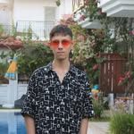

Alpha Content Creator & Game Developer @ FRVR
Ben Axtra (Berat Özdemir) — FRVR için alpha content creator ve bağımsız oyun geliştiricisiyim. Hızlı prototipler, yeniden oynanabilir dünyalar ve remix içerikler üretiyorum. Amacım oyunculara anında eğlence sunan, paylaşılabilir oyun deneyimleri yaratmak.